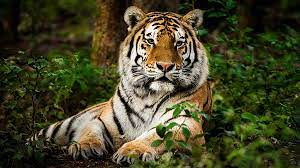

The tiger (Panthera tigris) is the largest living cat species and a member of the genus Panthera.
Some of breeds are:
The tigers have a lot of characteristics :
The tiger was first scientifically described in 1758. It once ranged widely from the Eastern Anatolia Region in the west to the Amur River basin in the east, and in the south from the foothills of the Himalayas to Bali in the Sunda Islands. Since the early 20th century, tiger populations have lost at least 93% of their historic range and have been extirpated from Western and Central Asia, the islands of Java and Bali, and in large areas of Southeast and South Asia and China. What remains of the range where tigers still roam free is fragmented, stretching in spots from Siberian temperate forests to subtropical and tropical forests on the Indian subcontinent, Indochina and a single Indonesian island, Sumatra.
